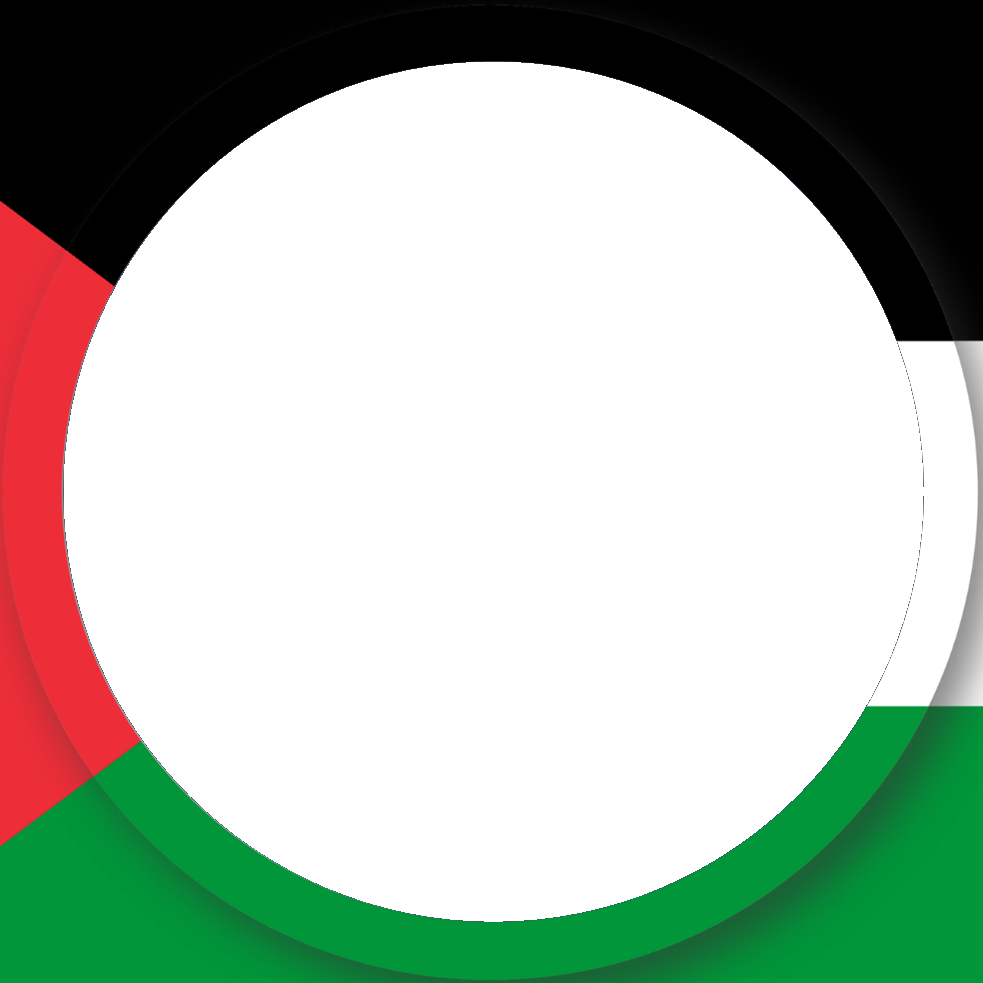

Profil Fotoğrafına Filistin
Çerçevesi Ekle

Fotoğrafı farenizin tekerleğiyle büyütüp küçültebilir, tutup istediğiniz yöne sürükleyerek istediğiniz şekilde ayarlayabilirsiniz.
Fotoğraf Yükle
Çerçeveli Fotoğrafı İndir